CareBridge
Care together, worry less.
A coordination hub for families caring for an aging parent — built so that no single person has to carry the whole picture in their head.
- Platform
- iOS & Android, mobile-first
- Target Users
- Patients' relatives — lead caregivers, co-caregivers, and extended family
- My Role
- UX Research · Information Architecture · UI Design · Prototyping
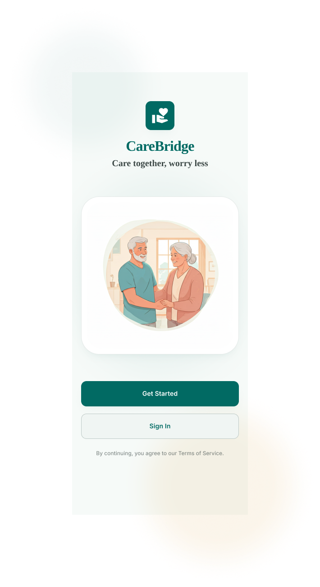
Caregiving is a team sport played without a scoreboard
When Margaret Chen, 79, was diagnosed with a chronic condition, her care didn't fall on one person — it fell on three: her daughter Riya, who manages daily logistics; her son Arjun, who helps part-time; and a wider circle of family who wanted to help but didn't know how. Within weeks, coordination broke down. Medication updates lived in one person's head, appointment reminders were duplicated over text, and nobody had a clear picture of what had already been done that day. Caregiving is rarely a solo job — but nearly every tool built for it assumes it is.
Understanding how families actually coordinate care
I spoke with family caregivers managing care for aging parents, ran a two-week diary study to capture real coordination moments as they happened, and audited existing eldercare and medication apps to see where they fell short. A short follow-up survey confirmed how widespread these pain points were.
What the research told us
- One person almost always becomes the "lead" — and quietly absorbs the mental load for everyone else
- Co-caregivers don't want control, they want visibility — a lightweight way to see what's needed and help
- Emergency information is scattered exactly when it's needed most urgently
- Small caregiving actions — a dose marked "taken" — need to feel acknowledged, not like data entry
- Trust across the family is built through transparency, not more notifications
Three roles, three very different needs
CareBridge was designed around the real coordination circle we kept seeing in research: one lead, one active helper, and a wider circle who wants in without overstepping.
Riya · Lead Caregiver
Needs
A single source of truth for meds, appointments and tasks — confidence that nothing falls through the cracks.
Frustrations
Repeating the same updates to different family members; carrying the mental load alone.
Arjun · Co-Caregiver
Needs
Clear, bite-sized tasks he can pick up without having to ask "what's needed" — a quick way to log what he's done.
Frustrations
Feeling like he's always a step behind on his mother's status.
Meera · Extended Family
Needs
Peace of mind and a way to feel involved from a distance, without needing full access.
Frustrations
Not wanting to intrude by calling for updates constantly.
From setup to the unexpected
Set up the care circle — create a profile and invite family
Coordinate daily care — log meds, tasks and notes in real time
Stay in sync — an activity feed keeps everyone aware without asking
Handle the unexpected — critical info is one tap away
Reflect & adjust — patterns surface ahead of the next doctor visit
What was breaking down before CareBridge
- Care updates scattered across texts, calls and sticky notes
- No shared medication log — a real risk of missed or doubled doses
- Emergency information trapped in one caregiver's memory or phone
- Uneven visibility left co-caregivers guessing what still needed doing
- No lightweight way for less-involved family to help without overstepping
A shared, visible practice — not one person's invisible labor
CareBridge gives the family a calm home dashboard that shows the day at a glance, lets medications and tasks be logged in a single tap, and gives every family member — from lead caregiver to an out-of-town sibling — a role suited to how involved they actually are.
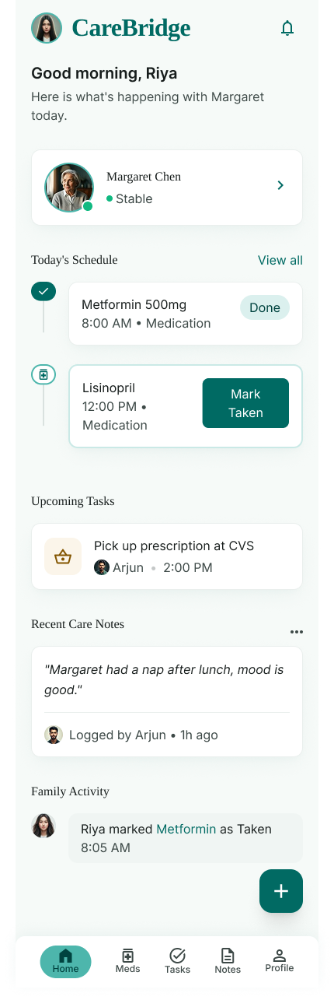
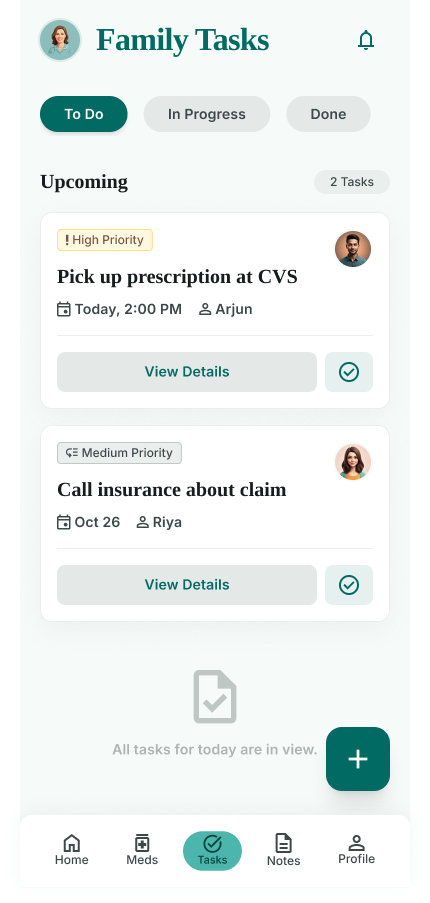
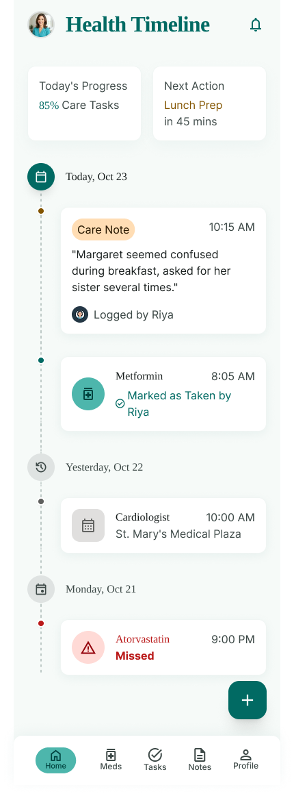
Choices behind the interface
- Role-based onboarding (Lead / Co-Caregiver) sets expectations for effort and access from the very first screen
- A calm, low-clinical palette — soft mint and teal instead of harsh medical white and blue — to reduce caregiver stress
- One-tap "Mark Taken" reduces medication logging to a single, satisfying action instead of a form
- The Emergency Card is designed for strangers — large type, allergies in red, built to be understood by a first responder in seconds
- An ambient Family Activity feed builds awareness passively, cutting down on "just checking in" messages
- Empty states reassure rather than nag — "All tasks for today are in view" instead of a guilt-inducing blank list
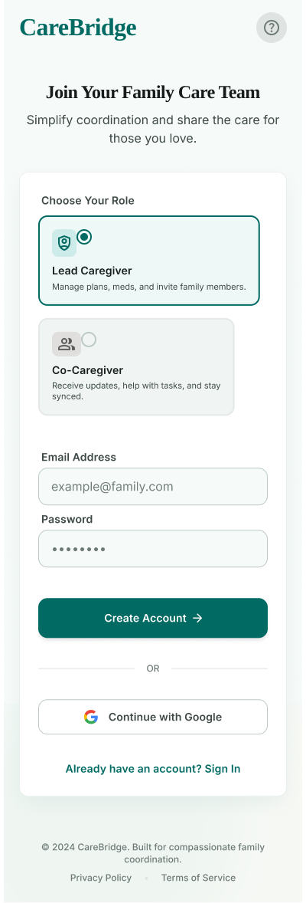
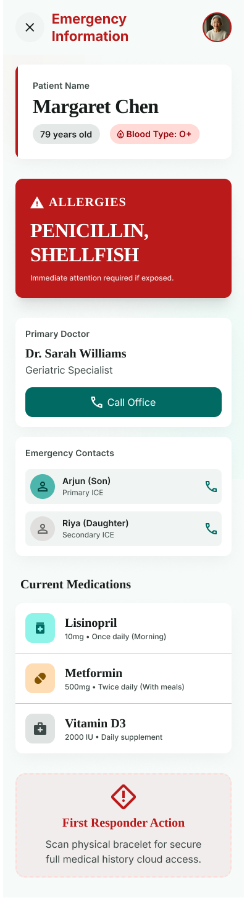
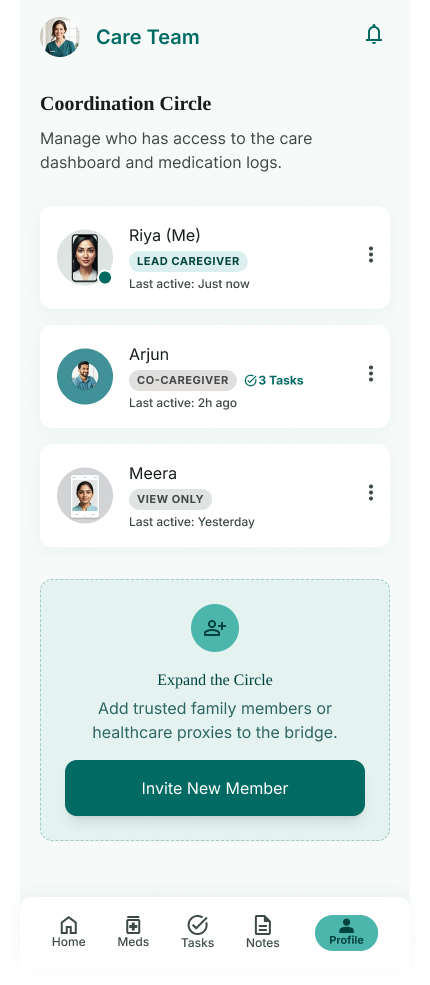
Validated in a two-week pilot with 5 caregiving families
A shared language for caregiving
What started as a single dashboard became a shared language for a family navigating caregiving together. Riya no longer carries every detail alone, Arjun always knows what's next without asking, and Margaret's care is safer because the people around her are finally working from the same page.
- In-app messaging for the care circle, so coordination never has to leave CareBridge
- Pharmacy refill integration to close the loop on medication logistics
- Lightweight caregiver check-ins to catch burnout before it becomes a crisis
More Screens
A closer look at the supporting flows — logging, setup, and everyday details.
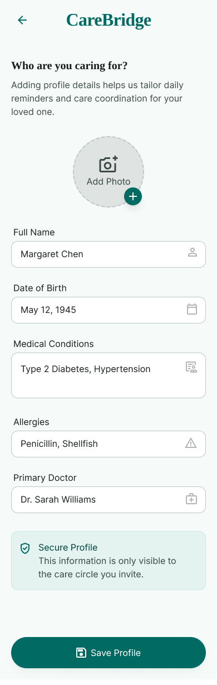
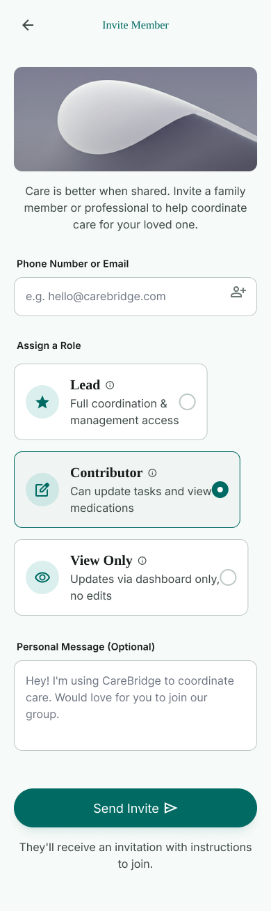
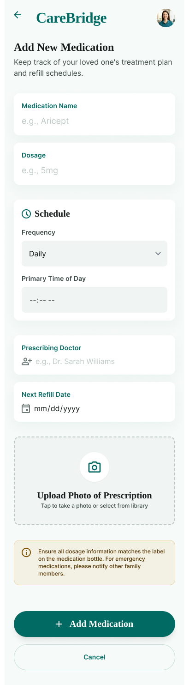
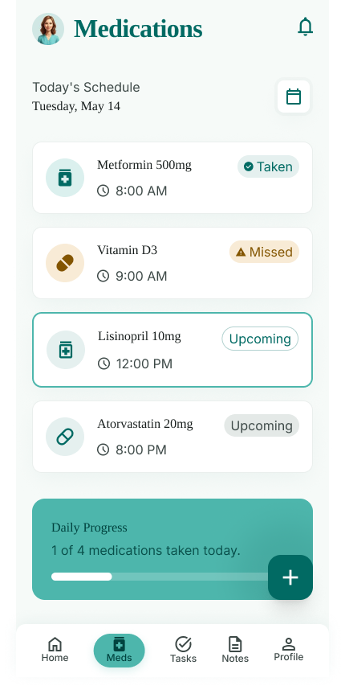
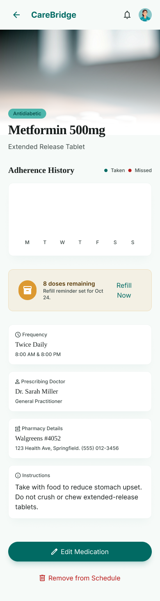
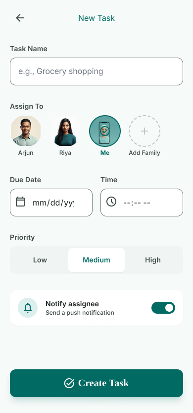
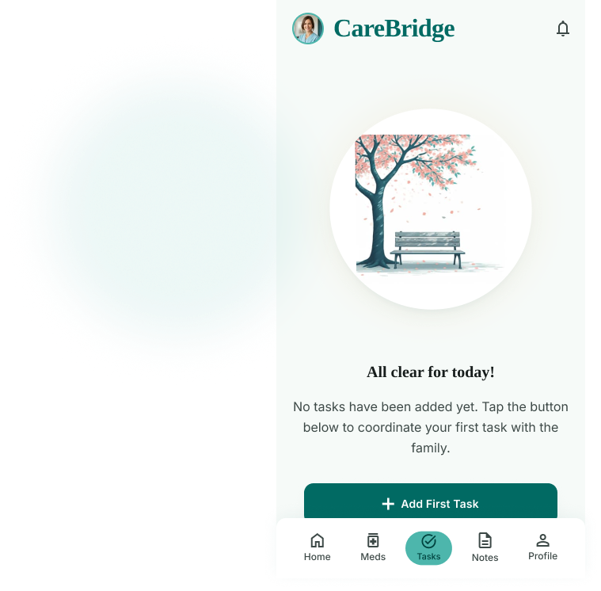
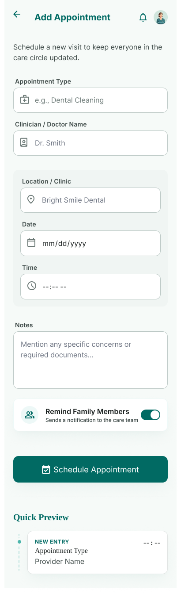
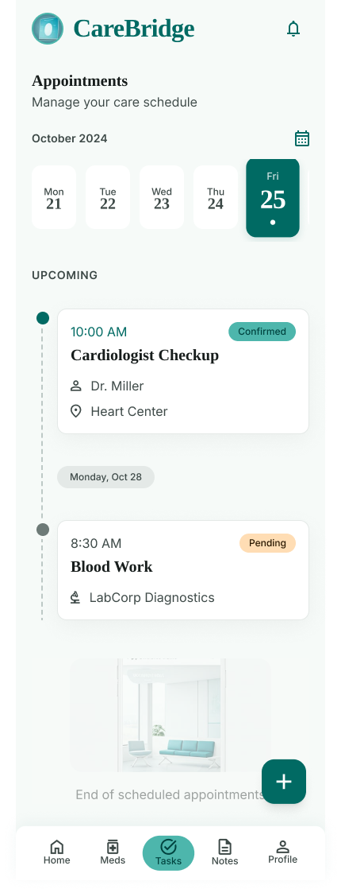
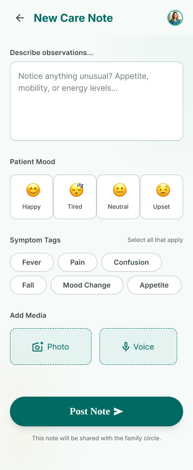
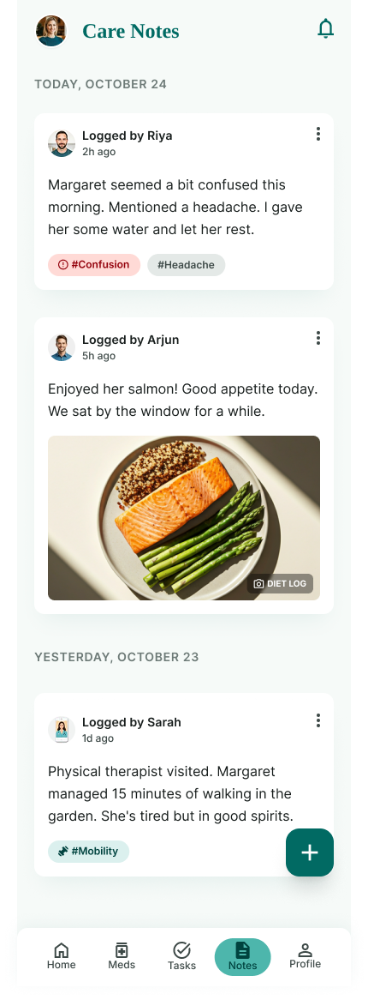
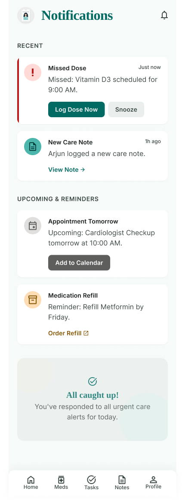
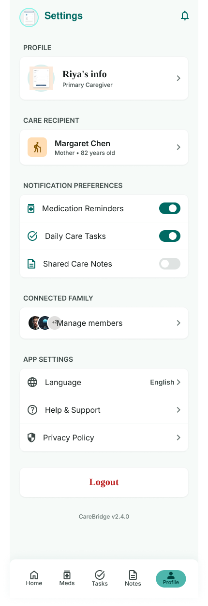